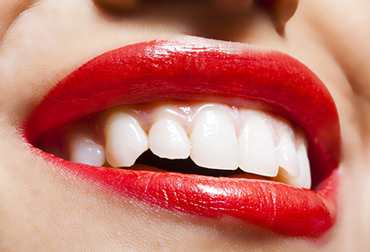

「顎の痛み」は咬み合わせが問題かもしれません
上下の歯列が適切に咬み合っていることで、お口は正しく機能します。もし顎に痛みがあるなら、咬み合わせに問題があるかもしれません。咬み合わせはお口だけでなく、全身にとっても大変重要です。違和感がある場合には、お気軽に町田市の歯医者「ワイズデンタルオフィス」までご相談ください。
咬み合わせの重要性について

通常上下の歯は、それぞれバランスを取りながら咬み合っています。そのため咀嚼する際、どこか一部分に過度な力がかかることはありません。しかし何らかの原因によって咬み合わせのバランスが崩れると、歯を支える顎の骨などの歯周組織に強い力がかかってしまいます。その結果歯や歯ぐきを傷め、歯周病を引き起こしてしまうこともあります。
さらに咬み合わせの乱れは、全身にも及びます。顎の左右にある関節に大きな力がかかると、顎が痛くなったり、やがて首や肩、頭、腰といった各所にも痛みを招いたりするのです。
年齢を重ねると、ただでさえ不定愁訴（ふていしゅうそ：原因不明の体の不調）が現れがちです。咬み合わせの乱れは、それらに拍車をかけてしまう可能性があります。お口の健康、そして全身の健康を守っていくためにも、日頃から咬み合わせを意識することがとても重要です。
「顎の痛み」は顎関節症かもしれません
「何もしていないのに顎が痛む」といった経験はありませんか？ 顎が痛む原因には、顎関節症（がくかんせつしょう）が考えられます。顎関節症は、ストレスや咬み合わせの乱れによって顎関節に負担がかかることで起こる病気です。
当院では顎関節症の痛みを緩和するケアや、その原因となった日常的なクセなどを解消するための治療を行っています。顎関節症は放置すると悪化してしまうこともありますので、気になる症状があればお早めにご相談ください。
このような症状はありませんか？
- 顎が痛い
- 顎がカクカク、ミシミシ鳴る
- 口が開けづらい
- 咬むと違和感がある
- 口を完全に閉じられない
これらの中に当てはまる症状がある場合、顎関節症であることが考えられます。様子を見ているうちに治まることもありますが、逆に悪化するケースもあります。できるだけ早く、適切に対処することが大切です。
顎関節症の原因
| 原因01 ブラキシズム |
「歯ぎしり」「食いしばり」といった動作の総称を「ブラキシズム」と言い、これが顎関節症の最たる原因だとされています。ブラキシズムが起こると筋肉が緊張し、顎関節に過度の負担をかけてしまいます。 |
|---|---|
| 原因02 心理的ストレス |
ブラキシズムは、心理的ストレスから起こることがあります。 |
| 原因03 偏咀嚼（へんそしゃく） |
食事の際に左右片方ばかりで咬む癖を、「偏咀嚼」と呼びます。片顎ばかりに過度な負担がかかります。 |
| 原因04 顎周りの筋肉に負担がかかる 癖や習慣 |
「頬杖」「うつぶせ寝」「猫背」「顎の下に電話をはさむ」といった癖があると、顎まわりの筋肉が緊張してブラキシズムが起こることがあります。また顎や歯にも不自然に力をかけ、顎関節症の原因になることもあります。 |
| 原因05 咬み合わせが悪い |
咬み合わせが悪かったり、歯列矯正がうまくいかなかったりすると、偏咀嚼やブラキシズムを招き、顎関節症につながることがあります。 |
治療法
当院では一人ひとりの症状に合わせ、「原因の解消」と「痛みの緩和」を組み合わせて治療します。症状によっては、咬み合わせの改善を図ることもあります。またご希望に応じて、東洋医学の見地に基づいた鍼治療も行っていますので、気になる方はお気軽にご相談ください。
【おもな治療例】
- 認知行動療法
- 物理療法
- 運動療法
- スプリント療法
- 薬物療法
- 外科療法
- など
症例紹介
○○の症例
 |
|
テキストが入ります。テキストが入ります。テキストが入ります。テキストが入ります。テキストが入ります。テキストが入ります。テキストが入ります。テキストが入ります。テキストが入ります。テキストが入ります。テキストが入ります。
| 治療における注意点・リスク | |
|---|---|
| 治療期間 | |
| 治療費用 |
○○の症例
|
|
テキストが入ります。テキストが入ります。テキストが入ります。テキストが入ります。テキストが入ります。テキストが入ります。テキストが入ります。テキストが入ります。テキストが入ります。テキストが入ります。テキストが入ります。
| 治療における注意点・リスク | |
|---|---|
| 治療期間 | |
| 治療費用 |
むし歯・歯周病にならないために「予防歯科・定期検診」